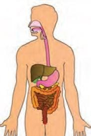
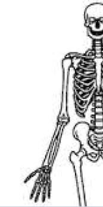

Bab 7 Sistem Organisasi Kehidupan
Sel sebagai Unit Struktural dan Fungsional Kehidupan
Struktur kehidupan dimulai dari atom →molekul → sel → jaringan → organ → sistem organ → organisme → ekosistem.
Struktur kehidupan yang dimulai dari atom – atom penyusun molekul yang berukuran mikro hingga ekosistem yang berukuran makro dan sangat kompleks disebut dengan biosfer. Berikut struktur organisasi kehidupan :
Setiap organisme tersusun dari dua jenis sel yang berbeda. Kedua jenis sel tersebut tersusun atas sel prokariotik dan eukariotik.
-
Sel prokariotik berasal dari bahasa Yunani yaitu prokaryote : pro berarti sebelum, karyote berarti nukleus. Sel prokariotik memiliki nukleus/inti sel, tetapi inti sel tersebut tidak dibungkus membran inti.
-
Sel eukariotik Sel eukariotik (berasal dari bahasa Yunani, eu berarti sejati/sebenarnya) merupakan sel yang memiliki inti sel dan dibungkus oleh membran inti.

Jaringan-jaringan pada hewan dan tumbuhan
Jaringan adalah sekelompok sel yang memiliki bentuk, susunan, dan fungsi sama. Pada makhluk hidup terdapat berbagai macam jaringan.
-
Pada tumbuhan terdapat jaringan meristem, jaringan epidermis, jaringan parenkim, jaringan pengokoh, jaringan pengakut, dan jaringan endodermis.
-
Pada hewan terdapat jaringan epitel, jaringan penyokong, jaringan otot, jaringan darah, dan jaringan saraf.
-
Pada manusia terdapat jaringan tulang, jaringan saraf, jaringan adipose, jaringan tulang rawan, jaringan ikat, jaringan otot, jaringan epitel.
Organ-organ pada Hewan dan Tumbuhan
Organ adalah kumpulan dari beberapa macam jaringan yang melakukan fungsi tertentu. Pada tubuh manusia dan hewan mamalia terdapat beberapa organ penting seperti jantung, paru-paru, mata, hati, telinga, dan ginjal.
Jantung dan paru – paru tersusun atas jaringan otot dan jaringan saraf. Jantung berfungsi memompa darah dan paru – paru berfungsi sebagai alat respirasi/pernafasan. Mata tersusun atas jaringan otot, jaringan saraf, dan jaringan ikat.
Pada tumbuhan berbunga juga terdapat beberapa organ penting, seperti akar, daun, batang, dan bunga. Akar tersusun atas jaringan epidermis, jaringan parenkim, dan jaringan pengangkut. Kemudian, batang tersusun atas jaringan epidermis, jaringan parenkim, jaringan pembuluh kayu, dan jaringan pembuluh tipis.
Sistem Organ dan Organisme
Di dalam tubuh makhluk hidup terdapat beberapa sistem organ. Pada makhluk hidup multiseluler seperti manusia, antar sistem organ saling bekerjasama untuk menjalankan fungsinya. Sistem organ tersebut kemudian membentuk organisme yaitu satu jenis makhluk hidup/individu yaitu manusia.
| Gambar | Sistem Organ | Organ | Fungsi |
|---|---|---|---|
|  | Sistem Pencernaan | Rongga mulut (lidah, gigi), faring, esofagus, lambung, usus halus, usus besar, hati, rektum, pankreas, dan anus | Mencerna makanan, mengabsorbsi molekul-molekul makanan yang sudah disederhanakan |
| Sistem Pernapasan | Hidung, tenggorokan, trakea, paru – paru (bronkus, bronkiolus, alveolus). | Menghirup oksigen dan mengeluarkan karbondioksida | |
|  | Sistem Gerak (rangka) | Tulang | Menyokong dan melindungi organ dalam |
| Sistem Peredaran Darah | Jantung, arteri, vena, kapiler dan sel-sel darah. | Mengangkut oksigen dan sari makanan ke seluruh sel tubuh, dan mengangkut zat hasil metabolisme yang tidak berguna keluar dari sel tubuh, serta melindungi tubuh dari mikroorganisme penyebab penyakit. | |
| Sistem Saraf | Otak, sumsum tulang belakang dan neuron | Mengkoordinasikan setiap tindakan bagian tubuh dengan mengirimkan sinyal dari dan ke bagian tubuh lain. | |
| Sistem Ekresi | Paru-paru, ginjal, kulit dan hati | Mengeluarkan sisa metabolisme yang tidak terpakai dari dalam tubuh dan menjaga keseimbangan sel dengan lingkungannya | |
| Sistem Reproduksi pada perempuan | Ovarium, rahim dan vagina.. | Perkembangbiakan |